短鏈脂肪酸
2026-10-09
短鏈脂肪酸由腸內菌發酵纖維製造，能改善胰島素阻抗、腸漏症與大腦健康，應通過飲食纖維增加而非口服補充。

69 篇文章
短鏈脂肪酸由腸內菌發酵纖維製造，能改善胰島素阻抗、腸漏症與大腦健康，應通過飲食纖維增加而非口服補充。

髓鞘決定神經訊號傳導速度，修補能力會隨年齡下降，學習、睡眠、油脂與鐵都影響髓鞘，作者也提到鋰、近紅外光與 citicoline。

腸胃保養常輸在進食習慣，如保留 12 小時不進食、專心吃飯、蒸煮、腹式呼吸，保健品只是加分，不能取代生活基本功。

David Ludwig 主張白飯等精緻澱粉與糖在體內都快速變成葡萄糖並推高胰島素，建議以全穀、豆類、原型澱粉取代精緻澱粉。

過量抗氧化物補充反而增加死亡風險，適度活性氧對細胞訊號傳遞、修復機制與整體免疫功能具必要性。
新鮮橄欖油含有油橄欖素活性物質，以COX抑制機轉發揮消炎作用，效果遠優於布洛芬且完全不傷胃肝。

B族維生素是八種獨立的維生素，各自參與不同的能量代謝和神經功能途徑，缺乏會影響多個生理系統。

脂毒性並非吃脂肪造成，而是肝臟用過量碳水自製脂肪，加上脂肪組織失能溢出游離脂肪酸，低碳高脂者三酸甘油酯反而可能較低。

鱈魚肝罐頭的 omega-3 與維生素 D 含量遠高於沙丁魚，維生素 A 也極高但有攝取上限，作者建議每週兩到三次、每次一到兩湯匙。

輔酶Q10隨年齡增長自然下降，並被他汀類藥物進一步消耗，補充對心臟衰竭患者死亡風險有顯著改善作用。

靜脈維他命C血漿濃度達口服極限的60–100倍，機制是生成H₂O₂促癌細胞氧化死亡，治療期間需避免同日給銅和麩胱甘肽並確保足夠銅質補充。

1050毫克卡姆果原汁降低發炎指標但同量維他命C純錠無效，食物基質內生物類黃酮發揮獨立作用，口服上限受SVCT1蛋白質飽和限制約200–400毫克。

血液三酸甘油酯的主要來源是肝臟用糖製造的，而非直接來自食物脂肪，吃糖越多製造越多。

只吃蛋白、丟掉蛋黃可能缺乏膽鹼而導致脂肪肝，文中說蛋黃的膽鹼不易轉成 TMAO，建議每天吃兩到三顆全蛋。

咖啡中最有價值的成分可能是綠原酸而非咖啡因，文中說它與血糖控制相關且怕熱，淺焙保留的含量遠高於深焙。

文中引述 Mark Hyman 的建議，每天多吃 10 到 20 克纖維可改善血糖控制與發炎，並提供加倍蔬菜量、纖維密度高食物等實用做法。

納豆激酶的正向結果主要來自每天 10,800 FU 的高劑量，3,600 FU 無效，文中提醒使用抗凝血藥物者不可自行補充。

餐廳常用的種子油（大豆油、葵花油、玉米油）亞油酸含量極高，反式脂肪代謝過程緩慢需六年消除。

多酚是腸道好菌偏好的食物，發酵後產生短鏈脂肪酸、強化腸壁，文中建議從橄欖油、莓果、綠茶等日常食物攝取，並先把腸道環境養好。

人體有獨立的蛋白質偵測系統，蛋白質比例不足時會持續發出飢餓訊號，驅動著整體熱量攝取大幅增加。

大蒜中的二烯丙基硫化物在小鼠實驗中延長壽命效果達11.4%，近似於二甲雙胍抗老效果的兩倍。

植物蛋白的消化率和必需胺基酸組成低於動物蛋白，欲達相同效果需提高攝取至每公斤1.2克以上。

Omega-7特別針對上皮細胞和皮脂腺，能修補皮膚和腸道黏膜的屏障損傷，改善皮膚保水能力。

Omega-7 被稱為脂肪因子，文中說它能協助處理糖分、強化腸道防線、關閉 NF-κB 發炎開關並守護胰島素分泌細胞，沙棘果與夏威夷豆是主要來源。

作者說明對已改善胰島素阻抗的人，長期極低碳水可能影響甲狀腺素轉換並加重壓力荷爾蒙負擔，建議用循環式碳水飲食運用碳水。
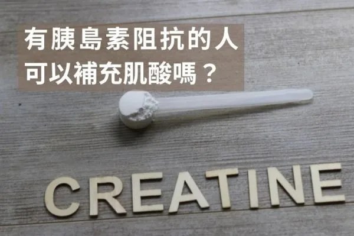
肌酸不會刺激胰島素且搭配運動能提升GLUT-4活性，即使有胰島素阻抗的人補充肌酸也相當安全，建議每日3至5克長期使用。

十字花科蔬菜的DIM能平衡雌激素代謝、抑制腫瘤形成，每週吃三四次十字花科蔬菜並搭配生食來源以保留芥子酶活性最為理想。

硒是甲狀腺T4轉成T3的關鍵礦物質，作者建議適量補充並可由巴西堅果攝取，過量可能慢性中毒，成人上限為每天400微克。

天然蝦紅素從雨生紅球藻來源、穿透血腦屏障、抗氧化力遠超維生素C和E，對心血管、神經退化和運動表現都有保護。

完全未補充卻B12高值可能是肝癌、血液惡性腫瘤或腎發炎的警訊，血清B12正常不代表細胞內有足夠B12，應搭配homocysteine、MMA檢驗。

合成葉酸需經酵素轉換成活性型5-MTHF，MTHFR基因變異者應改補L-methylfolate或folinic acid以避免補錯無效。

芹菜含phthalides能放鬆血管降低血壓、含apigenin具抗發炎效果，但非水溶性纖維多，腸道動力不足或易脹氣者應避免大量食用。

水飛薊素能保護肝細胞膜、啟動內源性抗氧化系統與促進肝細胞再生，對肝功能異常的人有輔助價值。

槲皮素是天然類黃酮植物色素，具有抗發炎、抗氧化和抗癌效果，能強化腸道細胞並改善整個腸道菌叢。

整理五篇研究後認為，一般維他命 D 保健品依建議劑量補充大多安全，血清濃度超過 150 ng/mL 或用活性類似物才較可能引起高血鈣。

維生素K2激活骨鈣素與基質Gla蛋白，是維持骨骼與血管健康的關鍵，來自發酵食品與動物性食品。

水解膠原蛋白補充8到12週後能提升皮膚水分與彈性，搭配維生素C與適當營養才能有效發揮作用。

尿石素A由腸道菌群將石榴中的鞣花酸轉化而來，促進線粒體自噬、延長肌肉壽命、保護大腦，動物實驗顯示可延長壽命19%。

肌酸是安全有效的補充品，能提升運動表現與認知功能，素食者補充可顯著改善記憶力，建議日攝取3-5克。

維生素D活性形式透過維生素D受體調控基因表達，減少促炎細胞因子、增加抗炎細胞因子，對多發性硬化症、第一型糖尿病和紅斑狼瘡有幫助。
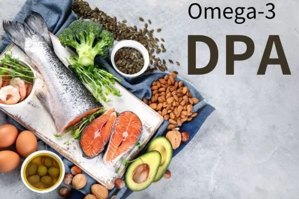
DPA是EPA與DHA的中間代謝產物，血漿DPA濃度高可降低冠狀動脈心臟病風險達60%，建議選擇含EPA、DHA和DPA的全光譜魚油。
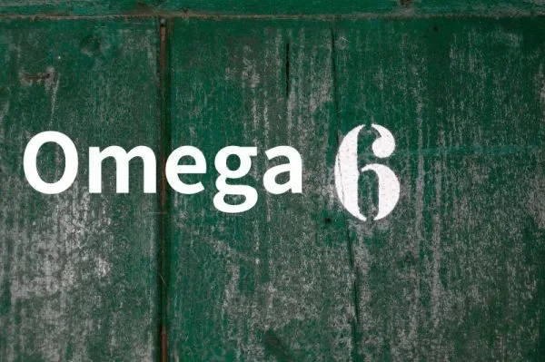
Omega-6包含多種類型非全為促炎物質，適量攝取並保持與Omega-3平衡有益健康代謝。

支鏈氨基酸尤其亮氨酸能促進肌肉生長與修復，但長期過量攝取在無運動情況下可能引發胰島素阻抗。
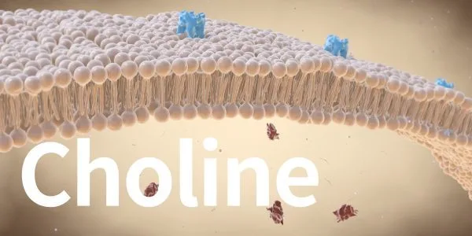
膽鹼是細胞膜磷脂的關鍵成分並支持乙醯膽鹼合成，建議女性每日攝取425毫克、男性550毫克。

茄紅素是強效抗氧化劑，與脂肪同時攝取並經加熱烹調能提高生物利用度，與前列腺癌等多種癌症風險降低相關。

DHA占大腦重量約8%支持認知功能，EPA具有心血管保護與抗炎作用，兩者建議每日攝取250至500毫克。
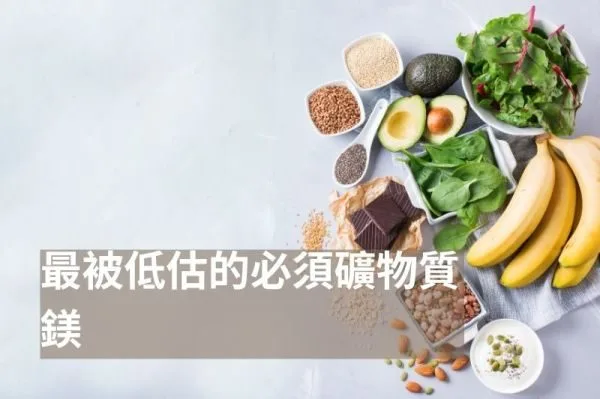
鎂是人體第四高含量的礦物質，參與超過六百種生理反應，但現代土壤和飲食中含量顯著下降容易缺乏。
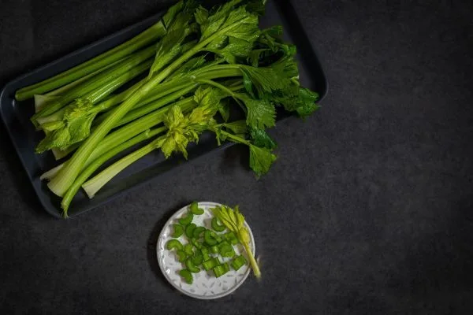
芹菜素是天然黃酮類化合物，具有抗氧化、抗炎、抗癌和神經保護作用，主要富含於洋甘菊、芹菜和香菜。

台灣66%成年人維生素D不足，維生素D受體分布全身調節超過2000種基因，建議補充D3每日2000至5000國際單位。
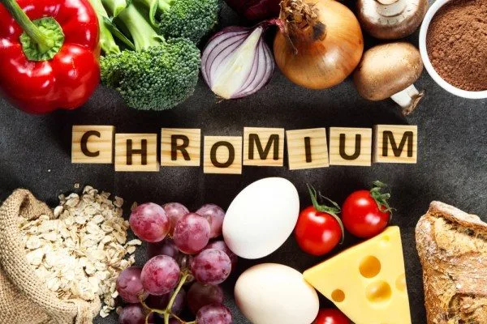
鉻能增加葡萄糖轉運體數量促進細胞攝取葡萄糖，腸道吸收效率不到2.5%，建議補充吡啶甲酸鉻每日200至300微克。
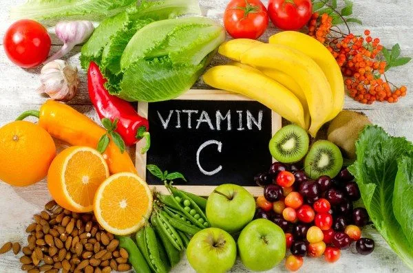
人類無法自行合成維他命C，作者建議盡量補充，自己一日額外補充約2000mg，文中並列出好處與缺乏症狀，過量主要副作用是腹瀉。

甘胺酸佔人體蛋白質11.5%，是合成膠原蛋白、穀胱甘肽和肌酸的重要成分，能保護腸壁、降低體溫幫助睡眠，建議每日補充1000毫克。

肉鹼將長鏈脂肪酸運入粒線體進行脂肪燃燒產生能量，素食者血液濃度較低但不一定缺乏，動物性食材、起司是主要來源，每日建議攝取2公克。
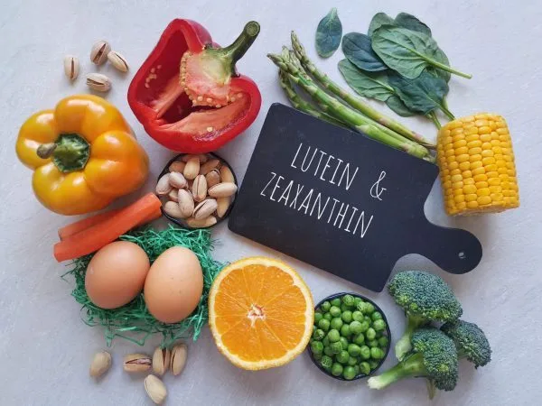
葉黃素和玉米黃素是存在於綠葉蔬菜和黃色蔬果的類胡蘿蔔素，能有效過濾藍光保護視網膜，搭配脂肪含量較高的食物食用能增加吸收效率。
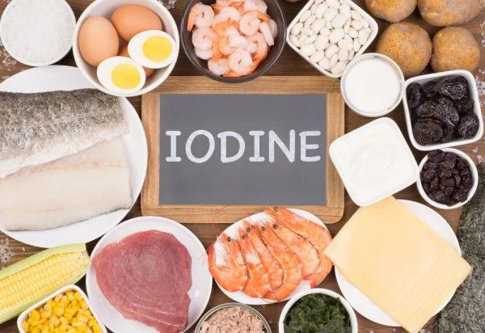
碘是製造甲狀腺激素的必需礦物質，全球超過20億人缺碘，建議每日攝取150微克，孕婦220微克，哺乳媽媽290微克，可從海帶、海鮮或含碘鹽補充。

丁酸是短鏈脂肪酸，由腸道菌發酵膳食纖維產生，具有抗發炎和促進腸道健康的作用，透過攝取高纖維食物比直接補充丁酸更能有效促進其生成。
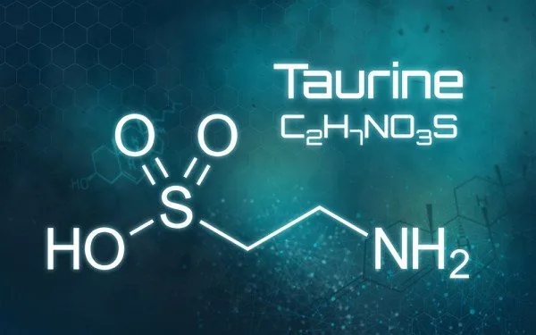
牛磺酸為條件性必需氨基酸，參與膽鹽製造、肌肉合成、血糖穩定與運動表現，每日補充500至3000毫克安全有效。

適應原是特殊草本植物，能幫助身體適應各種壓力並提升整體抵抗力，不同於會造成依賴的刺激物，人參、紅景天、藥用蘑菇和南非醉茄等都是常見的適應原。
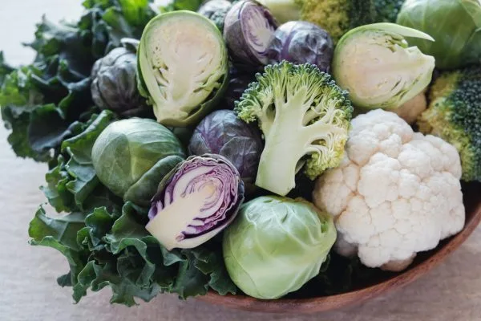
十字花科蔬菜含蘿蔔硫素具強大抗氧化與抗發炎效果，但SIBO與甲狀腺患者應減少攝取，有機品種更佳。
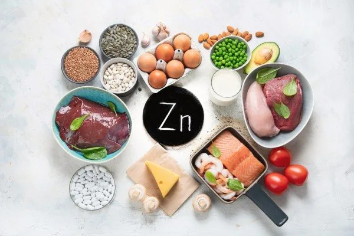
鋅為必需營養素主掌免疫與甲狀腺功能，缺乏導致掉髮與味覺喪失，建議每日25毫克攝取量與銅的比例為1:1。
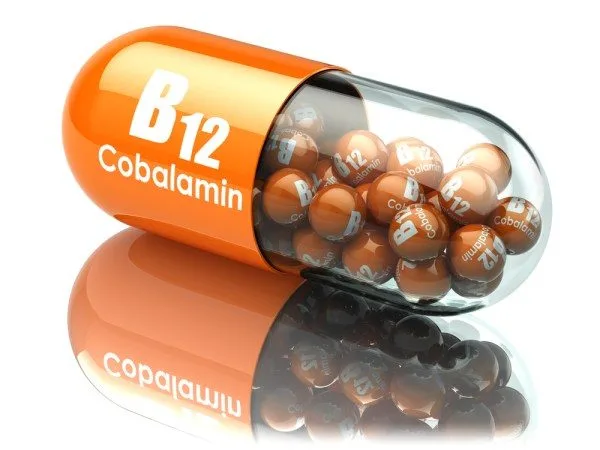
維他命B12為唯一能通過血腦屏障的B群，缺乏導致神經感覺異常與貧血，建議補充甲鈷胺或羥鈷胺形式。

麩醯胺酸是黏膜細胞主要營養來源，化療或開刀後補充能促進修復，食物中含量充足無需額外補充。
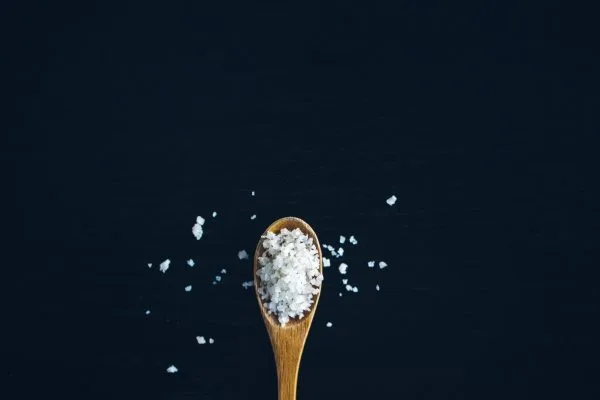
鹽不只是氯化鈉，不同種類各有特色；作者認為吃太少鹽也有害，並提到每日應攝取3~5克的鈉、約2茶匙鹽，高尿酸或痛風者則要減少。

大蒜的好處來自大蒜素，它不穩定、壓碎後靜置15分鐘較能釋出；文中也列出好處，並提醒胃潰瘍等族群應避免過多。
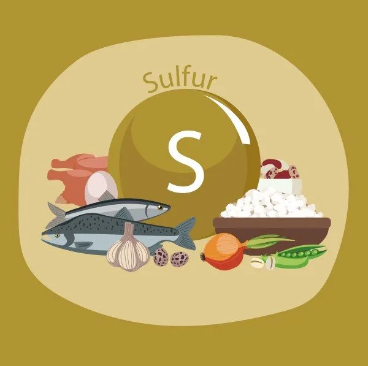
硫為體內第三豐富礦物質，能軟化血管降低血壓，亦助於膽汁與結締組織合成，食用十字花科與大蒜可充分補充。
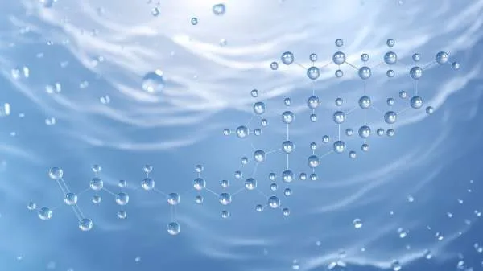
TUDCA為膽汁酸衍生物具保護肝臟細胞、促進脂肪分解與改善胰島素敏感度的作用，現主要由化學合成不需取自熊膽。
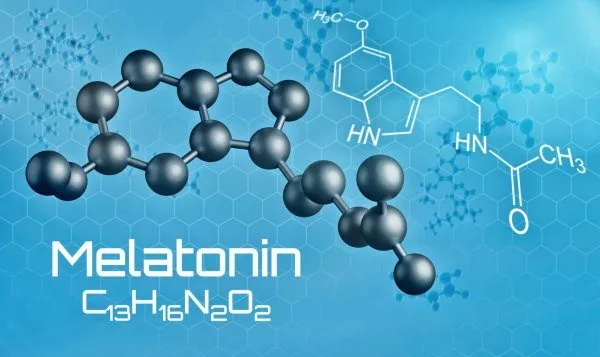
褪黑激素不只與睡眠有關，也與免疫和抗氧化有關；作者建議睡前兩個小時服用、從1毫克開始，並先改善睡眠習慣。
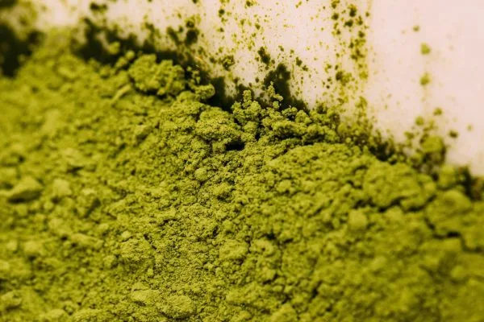
小球藻與螺旋藻各有特點，前者需破壁處理、主要幫助腸道排毒和補充脂溶性維生素，後者適合素食者補充必需氨基酸。
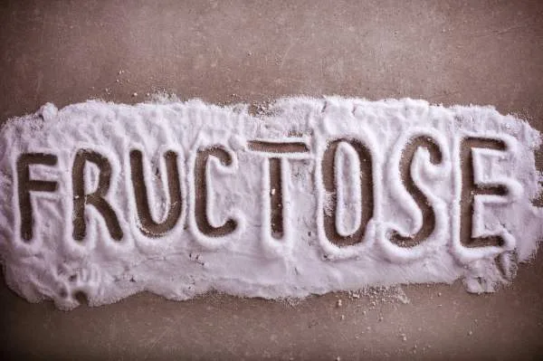
果糖結構類似酒精僅由肝臟代謝，攝取過多易導致非酒精性脂肪肝、三酸甘油脂升高與尿酸增加，戒掉水果和含蔗糖飲料可大幅改善。